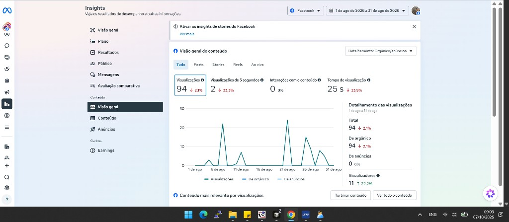
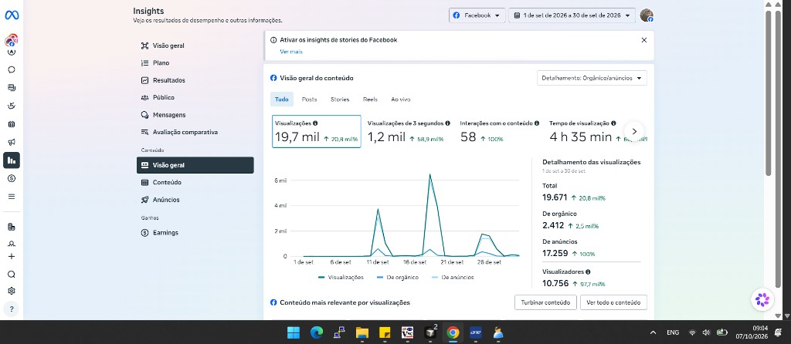
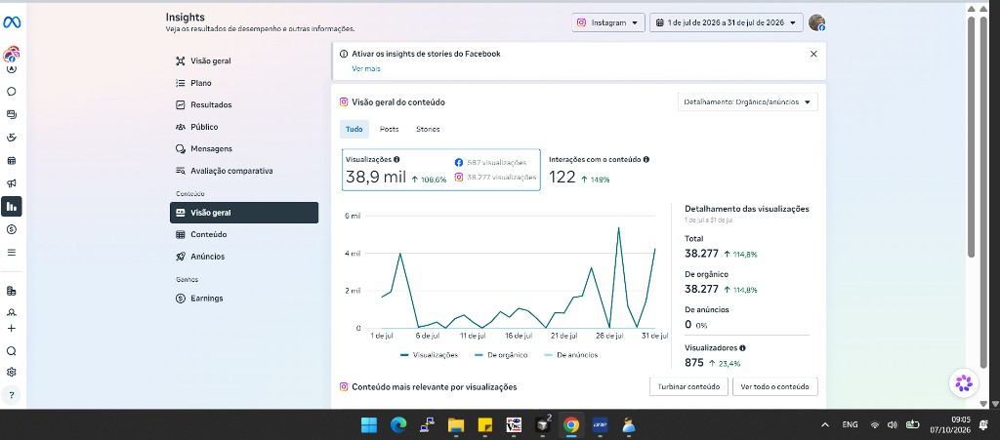
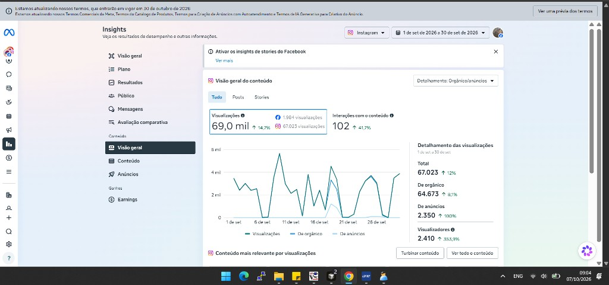

Mercado SuperamaSetembro de 2026 · impresso em 07/10/2026
Relatório de resultado das redes sociais, Instagram e Facebook
Alcance de setembro, mês em que o anúncio pago entrou, comparado com o mês em que anúncio estava zerado. Facebook: agosto. Instagram: julho.
Alcance do Facebook+87.700%11 pessoas em agosto → 10.756 em setembro
Alcance do Instagram+355,3%2.410 pessoas em setembro, contra o mês anterior
Visualizações pagas19.609soma das duas redes
Facebook veio de anúncio87,7%17.259 de 19.671
Instagram veio de anúncio3,5%2.350 de 67.023
Parte paga no total22,6%19.609 de 86.694
Alcance, em pessoas
Sem anúncioSetembro, com anúncio
Facebook. A barra de agosto é curta porque 11 pessoas são 0,1% de 10.756.
Agosto11
Setembro10.756
Instagram. Julho é o print sem anúncio. A seta de +355,3% compara com agosto.
Julho875
Setembro2.410
De onde veio a visualização em setembro
OrgânicoAnúncio
Facebook · 19.671 visualizações
Orgânico 2.412 (12,3%) · Anúncio 17.259 (87,7%)
Instagram · 67.023 visualizações
Orgânico 64.673 (96,5%) · Anúncio 2.350 (3,5%)
O anúncio fez o Facebook ser visto. No Instagram, a página já era vista sem anúncio: a verba entrou como uma fatia pequena em cima de um orgânico grande.
Relatório de resultado das redes sociais, Instagram e Facebook1
FacebookAntes: 1 a 31 de agosto · Depois: 1 a 30 de setembro
Facebook: o alcance nasceu do anúncio
Em agosto o anúncio estava em zero. Em setembro, 87,7% das visualizações foram pagas. O gráfico do mês sobe em dois dias, perto de 11 e de 21 de setembro.
Indicador
Agosto, sem anúncio
Setembro, com anúncio
Variação
Alcance (pessoas)
11
10.756
+87.700%
Visualizações
94
19.671
209 vezes
Orgânico
94
2.412
12,3% do mês
Anúncio
0
17.259
87,7% do mês
Interações
0
58
saiu de zero
Viram ao menos 3 segundos
2
1.200
cerca de 600 vezes
Tempo de visualização
25 segundos
4 h 35 min
660 vezes
Visualizações por pessoa
8,5
1,8
público novo
O 1.200 de “viram 3 segundos” é o 1,2 mil arredondado do print. Alcance +87.700% é o +87,7 mil% escrito no print de setembro.
Parte paga das visualizações de setembro
Orgânico 2.412Anúncio 17.259
Print de agosto, sem anúncio. Alcance de 11 pessoas. Anúncios: 0.

Print de setembro, com anúncio. Alcance de 10.756 pessoas, +87.700%. Anúncios: 17.259.

Facebook · agosto e setembro de 20262
InstagramAntes: 1 a 31 de julho · Depois: 1 a 30 de setembro
Instagram: o orgânico carregou o mês
Julho já tinha 38.277 visualizações e zero de anúncio. Em setembro o anúncio somou 2.350 visualizações, 3,5% do mês. O alcance do print de setembro sobe 355,3% contra agosto. De julho para setembro, o alcance sobe 175%.
Indicador
Julho, sem anúncio
Setembro, com anúncio
Julho → setembro
Alcance (pessoas)
875
2.410
+175%
Alcance contra o mês anterior
+23,4%
+355,3%
seta do print
Visualizações
38.277
67.023
+75%
Orgânico
38.277
64.673
+69%
Anúncio
0
2.350
3,5% do mês
Interações
122
102
−16%
Visualizações por pessoa
43,7
27,8
repetiu menos
O print de setembro marca interações em −41,7%. Essa seta compara com agosto, que não está nestes prints. De julho para setembro a queda é de 122 para 102, ou seja, −16%.
Parte paga das visualizações de setembro
Orgânico 64.673Anúncio 2.350
Visualizações, julho e setembro
Julho38.277
Setembro67.023
Print de julho, sem anúncio. Alcance de 875 pessoas. Anúncios: 0.

Print de setembro, com anúncio. Alcance de 2.410 pessoas, +355,3%. Anúncios: 2.350.

Instagram · julho e setembro de 20263
Leitura para a gerênciaNúmeros de setembro de 2026
O que estes números indicam
Pessoas no Facebook10.756+87.700% de alcance
Pessoas no Instagram2.410+355,3% de alcance
Vezes que cada um viu, Facebook1,819.671 ÷ 10.756
Vezes que cada um viu, Instagram27,867.023 ÷ 2.410
Onde a verba apareceu
Facebook pago17.259
Instagram pago2.350
Das 19.609 visualizações pagas, 88% estão no Facebook e 12% no Instagram. A escala da barra usa 17.259 como 100%.
Facebook sem a verba fica na casa de agosto: 11 pessoas e 94 visualizações no mês. O orgânico de setembro, 2.412 visualizações, ainda é pequeno perto das 17.259 do anúncio.
Instagram segue de pé sem a verba. De julho para setembro o orgânico passou de 38.277 para 64.673. O anúncio acrescentou 2.350.
O Facebook espalhou para gente nova: cada pessoa viu cerca de 2 vezes. O Instagram repetiu a visualização em quem já acompanha: cerca de 28 vezes por pessoa.
Interação no Facebook saiu de 0 para 58. No Instagram caiu de 122 em julho para 102 em setembro. Mais alcance não trouxe mais interação no Instagram.
Os dois picos do Facebook, perto de 11 e de 21 de setembro, acompanham o anúncio. No Instagram a linha do mês é o orgânico, com o pago quase invisível no gráfico.
Fonte dos números: os quatro prints de Insights, tela Visão geral do conteúdo, tirados em 07/10/2026. Alcance é o campo Visualizadores. A soma de pessoas das duas redes não tira quem viu o Facebook e o Instagram.
Relatório de resultado das redes sociais, Instagram e Facebook4